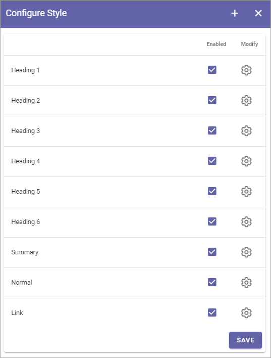

Text Styles¶
Here you can edit the settings for the text styles used in the RTF editor, as well as create new styles.
In the column Enabled you decide which styles should be available to choose for the RTF editor. They are listed under Styles in the settings described above and are also available in a few blocks where a custom RTF editor can be created.
Click the cog wheel to edit the setting for a style. You can edit all settings available when creating a new style, see below.
Create a new text style¶
Do the following:
- Click the plus.
- Use these settings:

- Title: Add a title (name) for the style, in any or all available languages. Default tenant language is mandatory.
- Inherit: To inherit style settings from the web browser (which can actually differ depending on the browser the user has), select this option. To set your own settings for the style, deselect the option and a settings field becomes available.